-
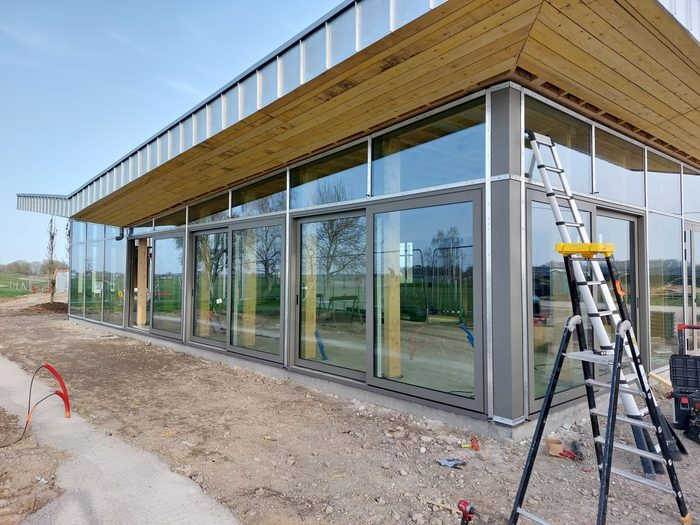
Niergnies — 2026Le Club House du Golf du CambrésisUn mur rideau qui dessine une aile d'avion, et toutes les façades vitrées du bâtiment. -
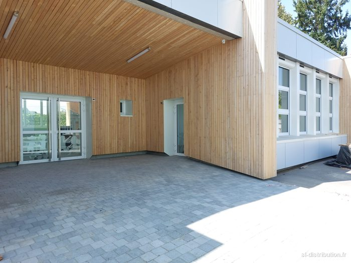
Cambrai — 2026Un bâtiment de l'école Jacques Brel reparti à neufFenêtres, portes et volets solaires, posés pendant que l'école tournait. -
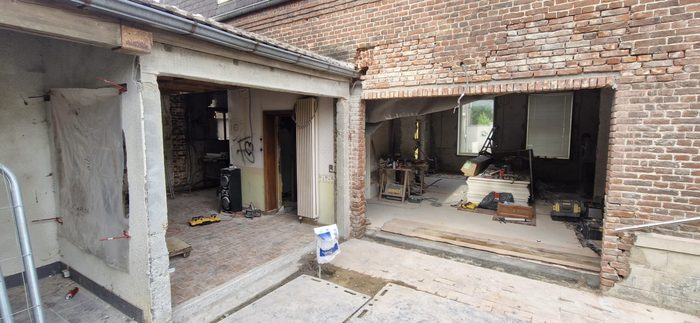
Ligny-en-Cambrésis — 2026Six mètres de mur ouverts sur le jardinIls voulaient des coulissantes. Je leur ai proposé de l'accordéon, et le mur s'efface complètement. -
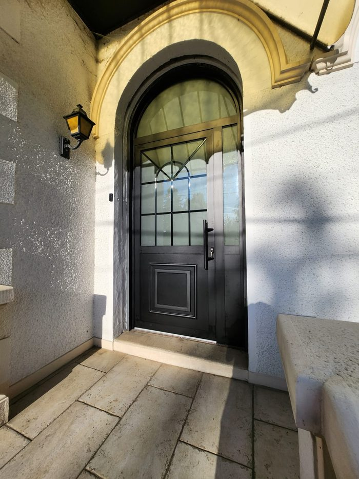
Caudry — 2026Une porte d'entrée pour une maison de maîtreL'ancienne porte était magnifique. Et c'était une passoire. -
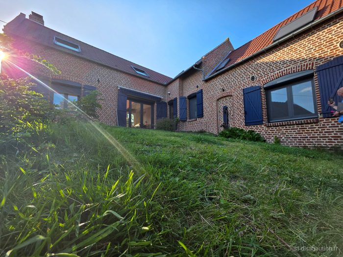
Lécluse — 2026Une longère en brique entièrement rénovéeCette maison était à vendre. Elle a été rachetée, et tout a été repris. -
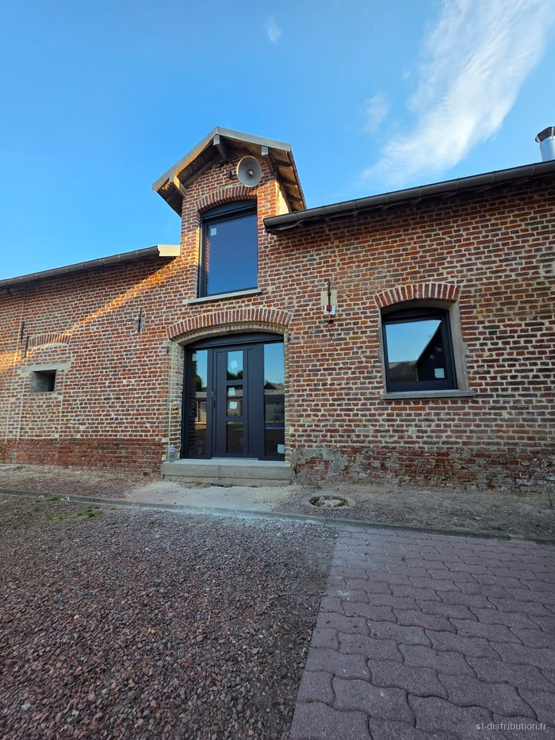
Bellicourt — 2026Une vieille ferme en brique qui revitDes ouvertures d'origine fatiguées, remplacées par du sur-mesure anthracite. -
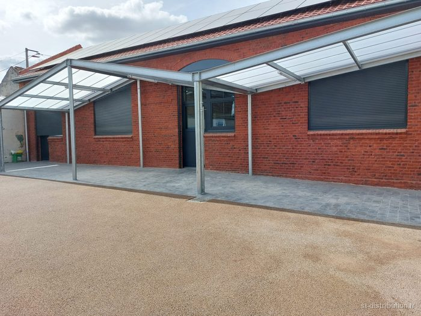
Noyelles-sur-EscautL'école maternelle de Noyelles-sur-Escaut rénovéeToutes les menuiseries remplacées — et c'est l'école de mon village, celle où je suis allé enfant. -
 Honnecourt-sur-Escaut — 2026La pharmacie d'Honnecourt-sur-EscautUne grange entière rénovée dans le village où je vis — et c'est mon pharmacien.
Honnecourt-sur-Escaut — 2026La pharmacie d'Honnecourt-sur-EscautUne grange entière rénovée dans le village où je vis — et c'est mon pharmacien. -
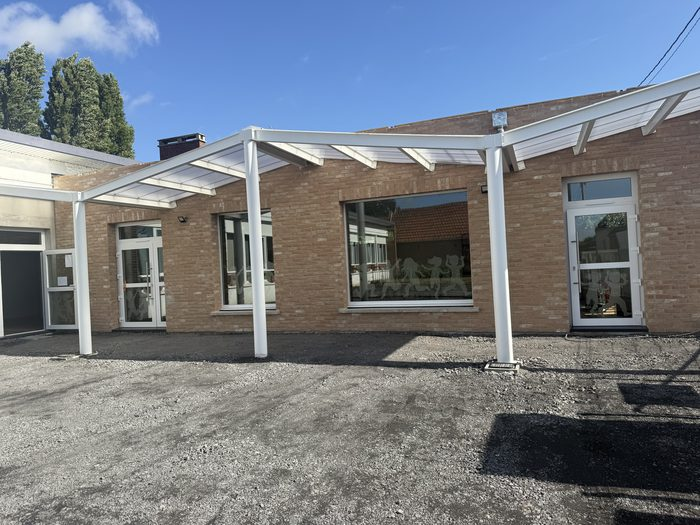
CauroirL'école de CauroirLes menuiseries extérieures de l'école, fournies et posées pour l'entreprise titulaire du marché. -
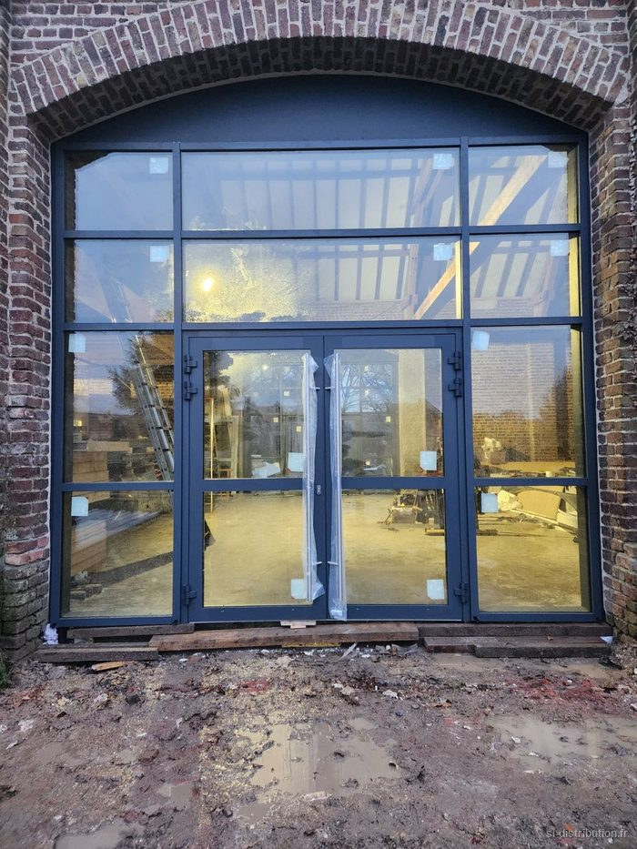
Villers-PlouichUne grange transformée en boucherieDeux grands murs rideaux et une sectionnelle industrielle pour faire d'une grange la boucherie À la Belle Blonde. -
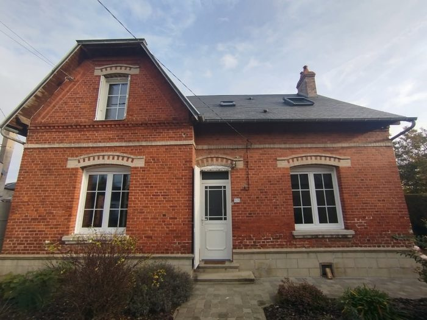
DoingtUne maison qui avait du cachet à conserverDes menuiseries neuves qui respectent l'esprit de la maison — le cachet est resté, le confort a changé. -
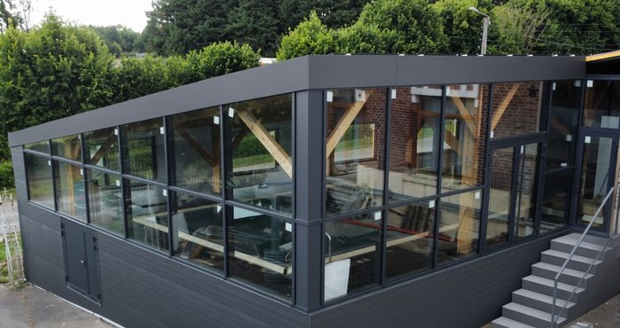
Un espace piscine baigné de lumièreMon tout premier mur rideau : de grands vitrages autour d'un bassin, sur une structure construite par le propriétaire lui-même. -
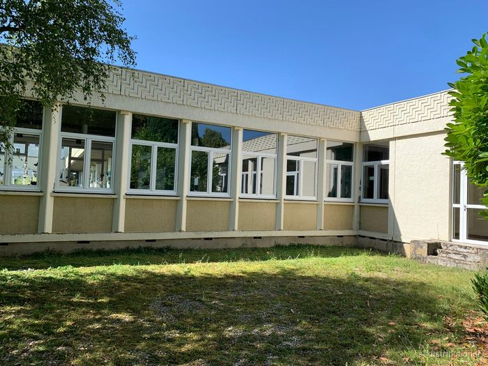
PéronneL'IME de Péronne — 130 châssis et volets remplacés130 châssis et leurs volets changés sur l'ensemble des bâtiments de l'établissement. -
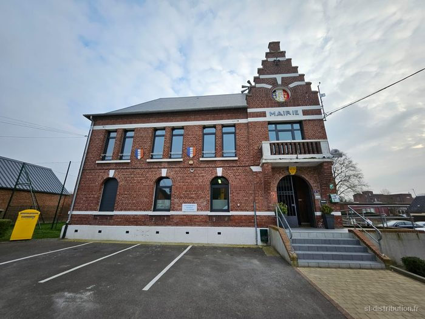
Crèvecœur-sur-EscautLa mairie de Crèvecœur-sur-Escaut rajeunieMenuiseries et volets remplacés en gris anthracite RAL 7016 — un vrai coup de jeune pour la mairie. -
Villers-Plouich18 volets solaires pour la mairie et l'école de Villers-PlouichUn ensemble de dix-huit volets roulants solaires Somfy, pilotables, sur la mairie et l'école.
-
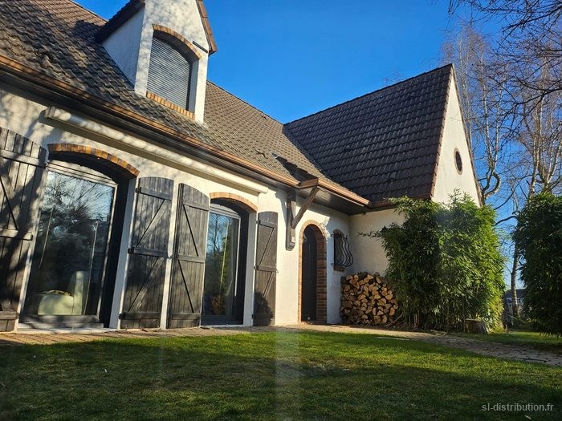
ProvilleToutes les menuiseries d'une maison à ProvilleLe changement de toutes les menuiseries de la maison, avec volets roulants solaires io et triple vitrage. -
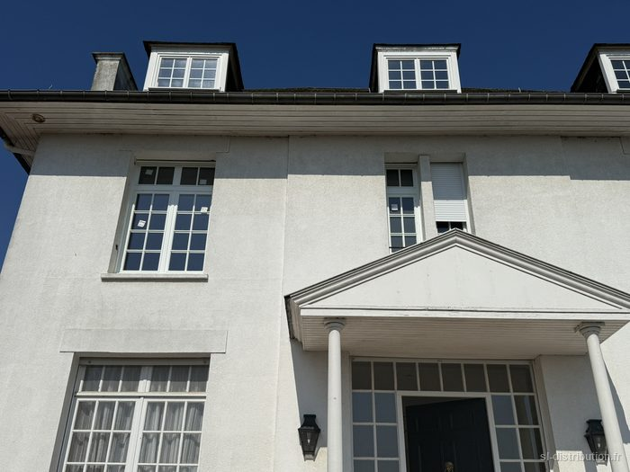
Avesnes-le-SecDu bois pour du bois, dans une maison de maîtreLes menuiseries bois d'une maison de maître style manoir remplacées par des menuiseries bois neuves — une première, et un client très satisfait. -
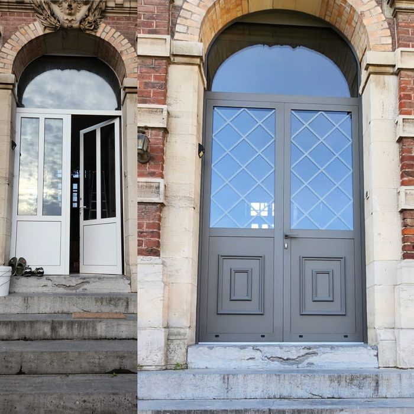
Portes d'entrée — quelques modèles posésUn florilège de portes d'entrée posées par nos équipes, du classique au contemporain.